AKT 1
SOUL
Ein Agent, der dich kennt, in deiner Stimme schreibt und für dich arbeitet. Ein Leben lang. Gebaut mit Claude Code, Schritt für Schritt, mit Nader.
Du schaust nicht zu. Du baust. An vier Sonntagen entsteht dein eigenes Setup, und du gehst mit einem Agenten nach Hause, der ab dem ersten Tag Arbeit abnimmt.
Dein Agent lernt, wer du bist.
Hausaufgabe 7 Abende Sprachnotiz, 20 Aufgaben zum Abgeben
Aus einem Assistenten wird ein Team.
Hausaufgabe Jeden Tag eine echte Aufgabe abgeben
Dein Agent arbeitet, während du schläfst.
Hausaufgabe Eine Woche laufen lassen, Fehler sammeln
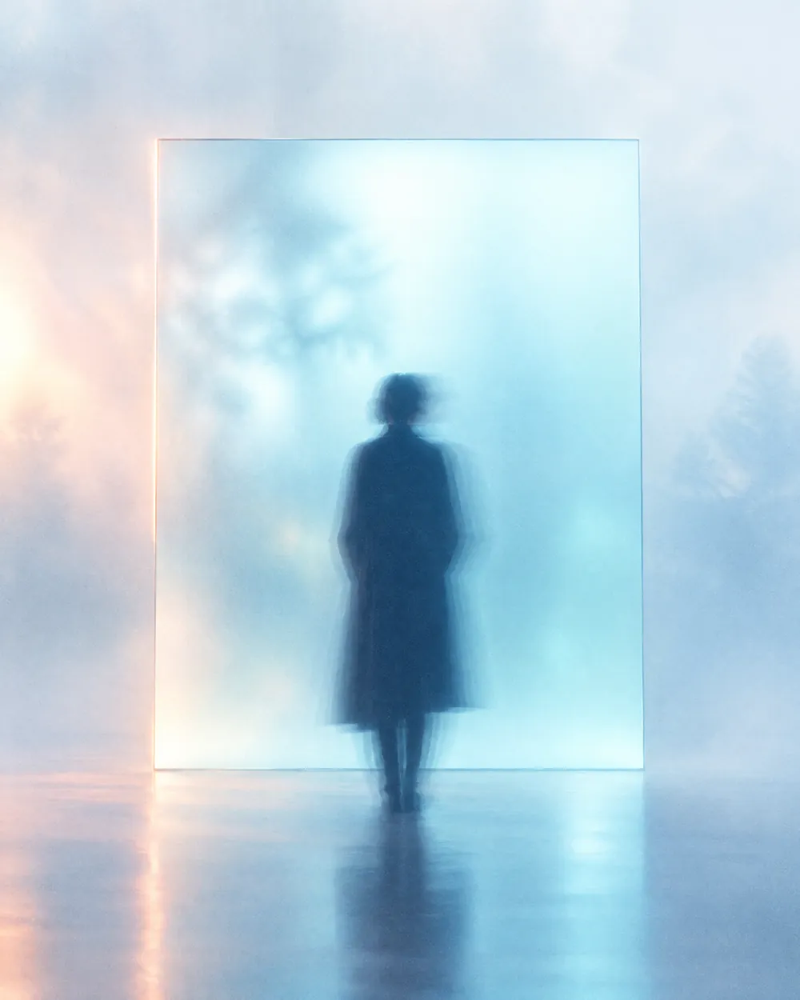
Du siehst dein System.
Finale Präsentation, Zertifikat, Alumni Gruppe
Eine Stunde draußen. Ich stelle Fragen, du erzählst. Wo du herkommst, wie du arbeitest, was dich nervt, wo du hinwillst. Wir nehmen alles auf. Daraus baut dein Agent sein Fundament: deine Stimme, deine Werte, deine Regeln.
Deine Aufnahme gehört dir und bleibt auf deinem Rechner.
Berlin, marokkanische Wurzeln, Gründer der Produktionsfirma Shuto Crew. Commercials, Social Media, Musikvideos, unter anderem für BMW. Autodidakt in allem, vom Breakdance bis zur Chartanalyse. Heute laufen bei mir Agenten, die Videos produzieren, Kanäle steuern und Unterlagen sortieren, während ich drehe.
„KI ist ein Werkzeug, kein Ersatz für eigenes Denken. Wir lagern nicht das Denken aus. Wir lagern die Wiederholung aus.“
Keine Mockups, keine Stockbilder. Echte Screens aus Projekten, die ich mit Claude Code gebaut habe. Genau so denkst du nach dem Workshop: in Systemen, nicht in Tools.
Ein News Kanal für TikTok und Instagram, den die KI selbst bespielt. Sie findet Themen, schreibt mit zwei Quellen und Faktencheck, vertont, baut die 3D Szene, rendert, plant die Posts und wertet die Zahlen aus. Ich gebe nur noch frei.
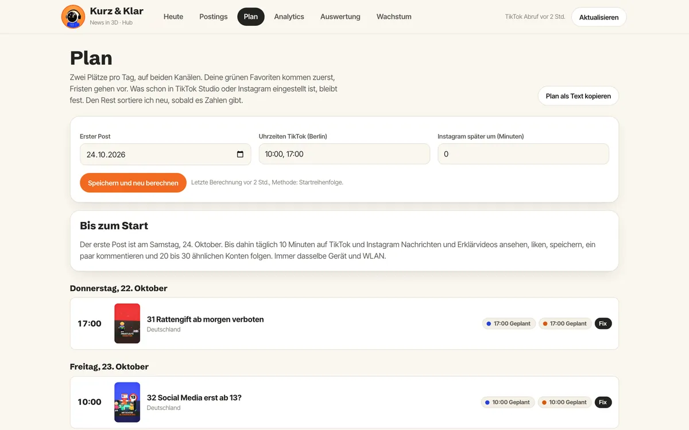
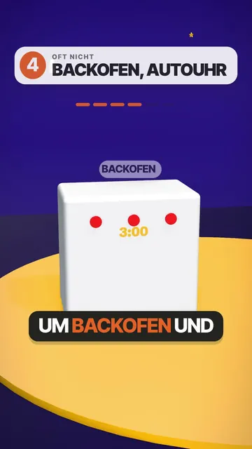
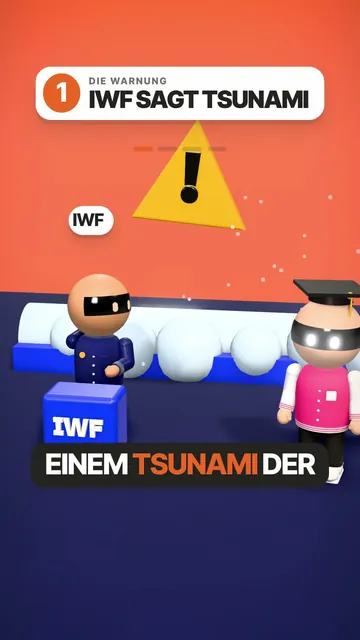
Mein Cockpit für den Kryptomarkt. Jeden Morgen um 07:30 und dreimal am Tag läuft die Datenkette von selbst: Kurse, Signale, Stimmung, Onchain Daten und ein tägliches Marktupdate Video. Danach gehen die öffentlichen Seiten automatisch online.
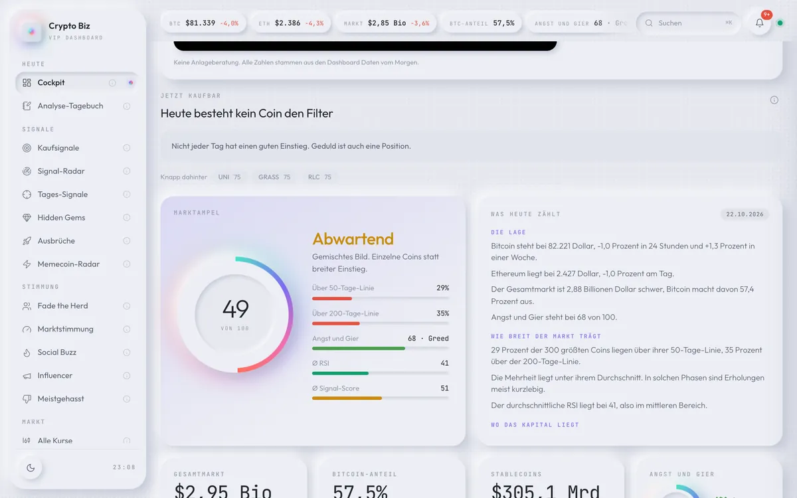
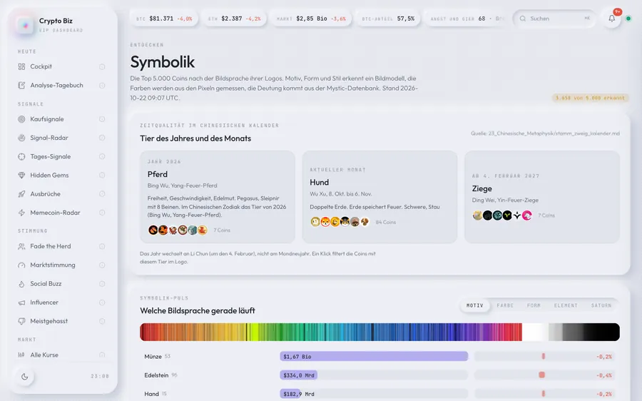
Für meine Agentur Social Bites habe ich einen Builder gebaut, der aus einem Moodboard eine komplette Gastro Marke macht: Logo, Rezepte, Standort, Businessplan, Franchise Handbuch, 3D Visualisierung und eine eigene Website. Dazu ein internes Portal fürs Team mit Akquise, Planung, Produktion und Brand Book.
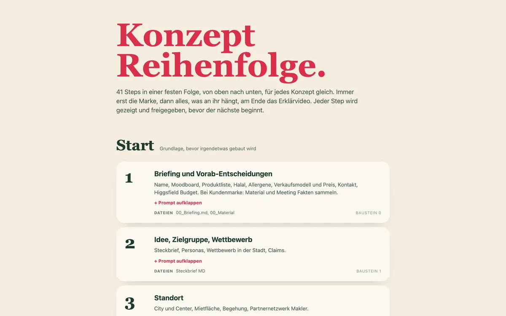
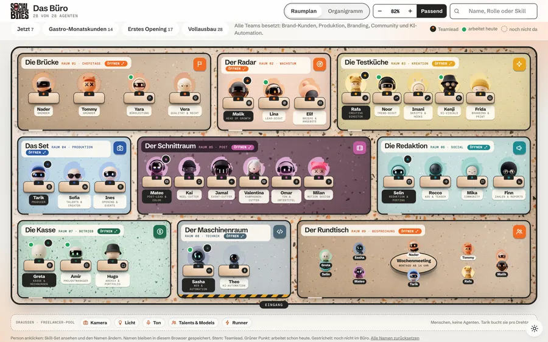
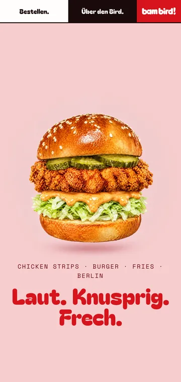
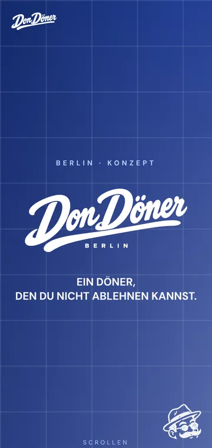
Pray For Rain ist eine Welt Simulation: Völker gründen Dörfer, Städte und Staaten, treiben Handel, führen Kriege und deuten deine Zeichen als Mythen. Die Welt lebt weiter, auch wenn der Tab zu ist. Mystic ist ein Erkundungsspiel durch eine surreale Nachtstadt, gespeist aus meiner eigenen Wissensbasis.
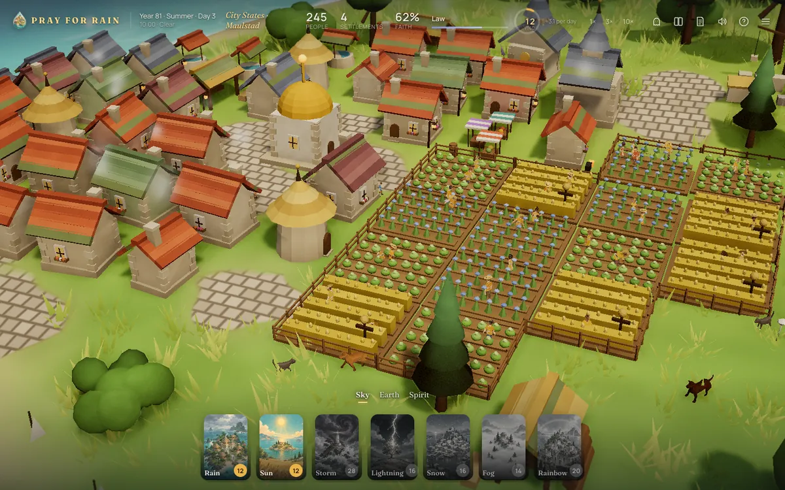
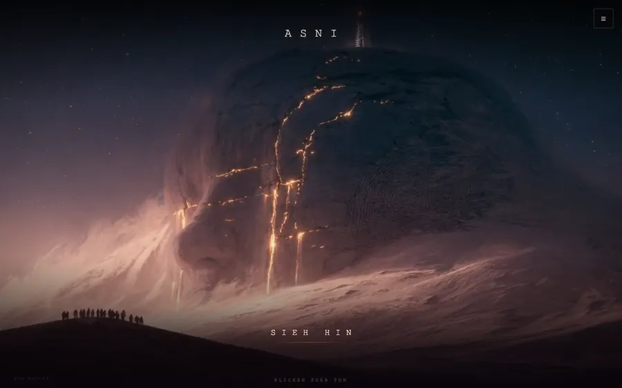
Alles läuft in einem Browser OS im macOS Stil: Ordner, Dock, Spotlight, Widgets. Ein Klick startet jede App samt Server, auch unterwegs vom Handy. Dahinter arbeiten Agenten mit Gedächtnis und Aufgaben, die zu festen Zeiten von selbst starten.
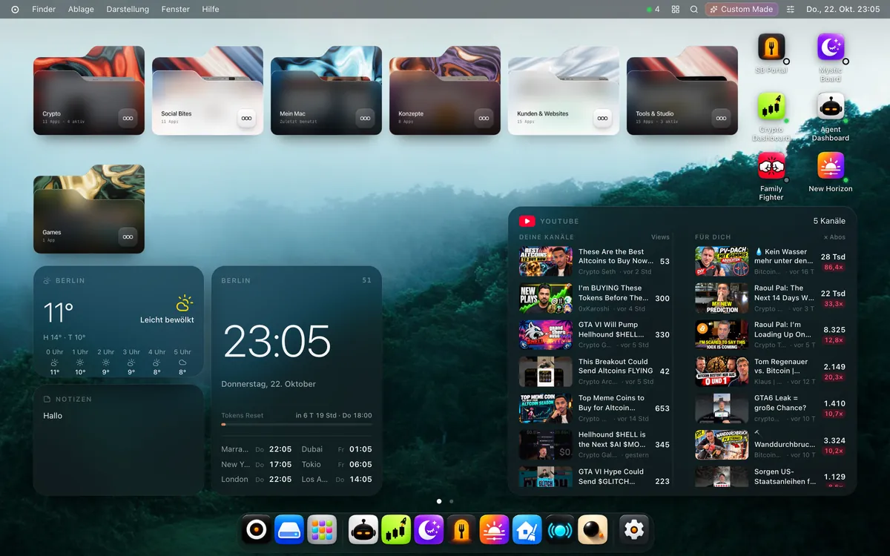
Ich will, dass jeder am Ende ein laufendes System hat. Deshalb kleine Gruppe und vorher ein kurzes Gespräch, ob es passt. Die ersten fünf Plätze gibt es zum Early Bird Preis.
Nein. Du sprichst mit deinem Agenten in normaler Sprache. Den Rest bauen wir zusammen.
Ein Claude Abo (Pro oder Max). Alle anderen Werkzeuge im Workshop sind kostenlos. Die Workshop Gebühr zahlst du nach der Zusage per Rechnung.
Alles bleibt auf deinem Rechner. Passwörter, Bankdaten und Ausweise tippt nur eine Person ein: du.
Nein. Dein Agent bereitet vor und sortiert. Die Beratung bleibt bei deinem Steuerberater.